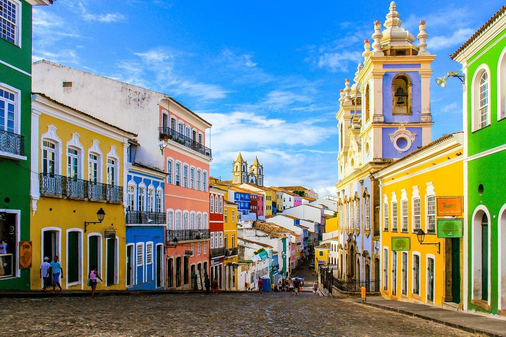
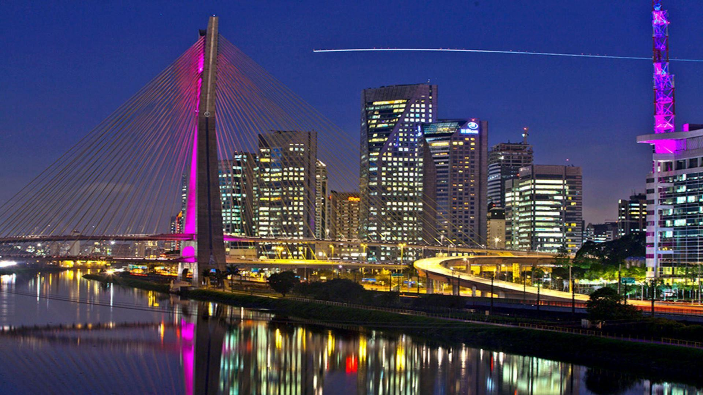

Paisagens Deslumbrantes
Faça uma viagem visual pelos lugares mais incríveis e naturais do nosso território.
Rio de Janeiro

O Rio de Janeiro, conhecido como a Cidade Maravilhosa, é um dos destinos turísticos mais famosos do Brasil. A cidade encanta pela combinação de belas paisagens naturais, cultura vibrante e história. Os seus principais pontos turísticos incluem o Cristo Redentor, o Pão de Açúcar e as famosas praias de Copacabana e Ipanema. O Rio também é um importante centro cultural, sendo o berço do samba e do tradicional Carnaval, que atrai visitantes de todo o mundo.
Salvador

Salvador, a primeira capital do Brasil, é um destino que respira história, cultura e alegria. Localizada na Bahia, a cidade é mundialmente conhecida pela sua rica herança afro-brasileira. O seu centro histórico, o Pelourinho, é famoso pelas construções coloridas e pela arquitetura colonial portuguesa. Salvador é o coração de ritmos como o axé e o samba-reggae, além de sediar um dos maiores Carnavais do mundo.
São Paulo

São Paulo, conhecida como a cidade que nunca dorme, é a maior metrópole e um dos destinos mais cosmopolitas do Brasil. A capital paulista encanta pela combinação de arquitetura imponente, diversidade cultural e ritmo acelerado. Os seus principais pontos turísticos incluem a movimentada Avenida Paulista, o Parque Ibirapuera e o icónico Museu de Arte de São Paulo (MASP).